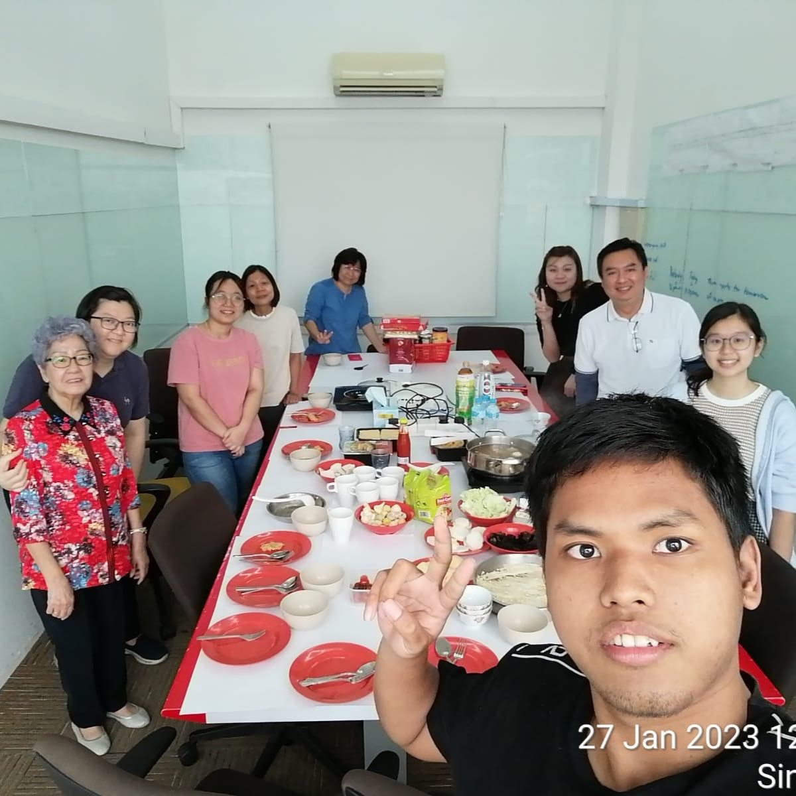
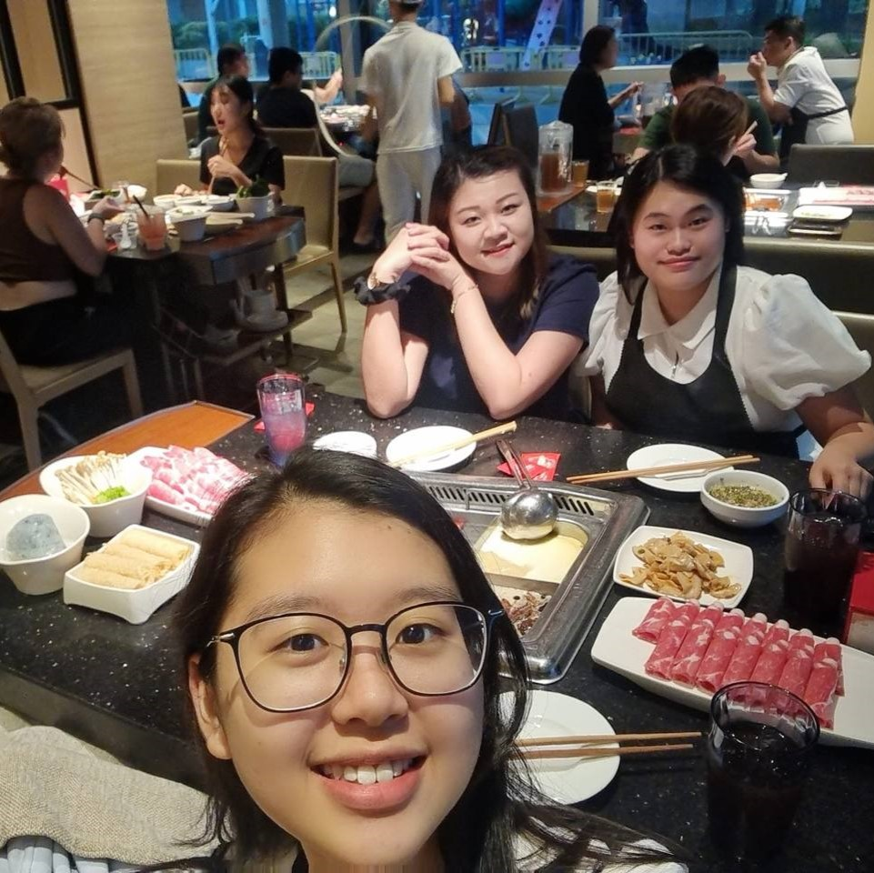
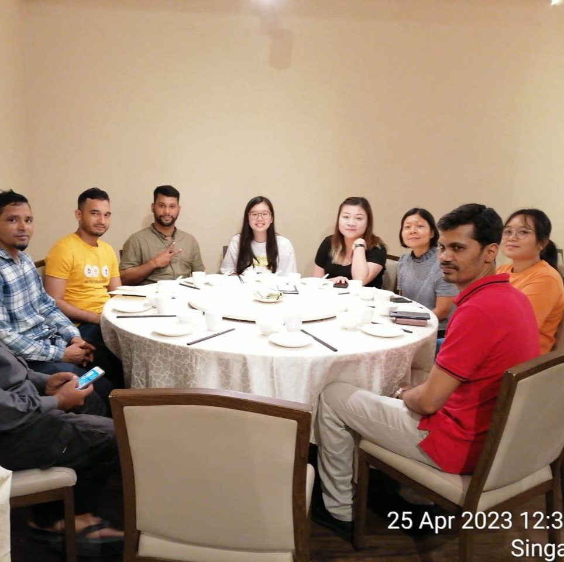
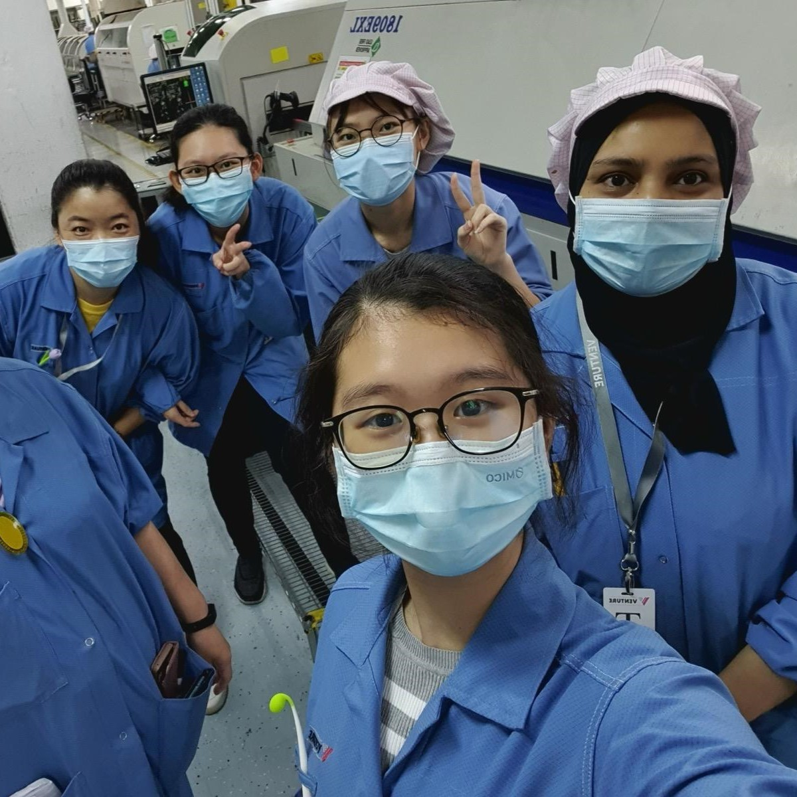
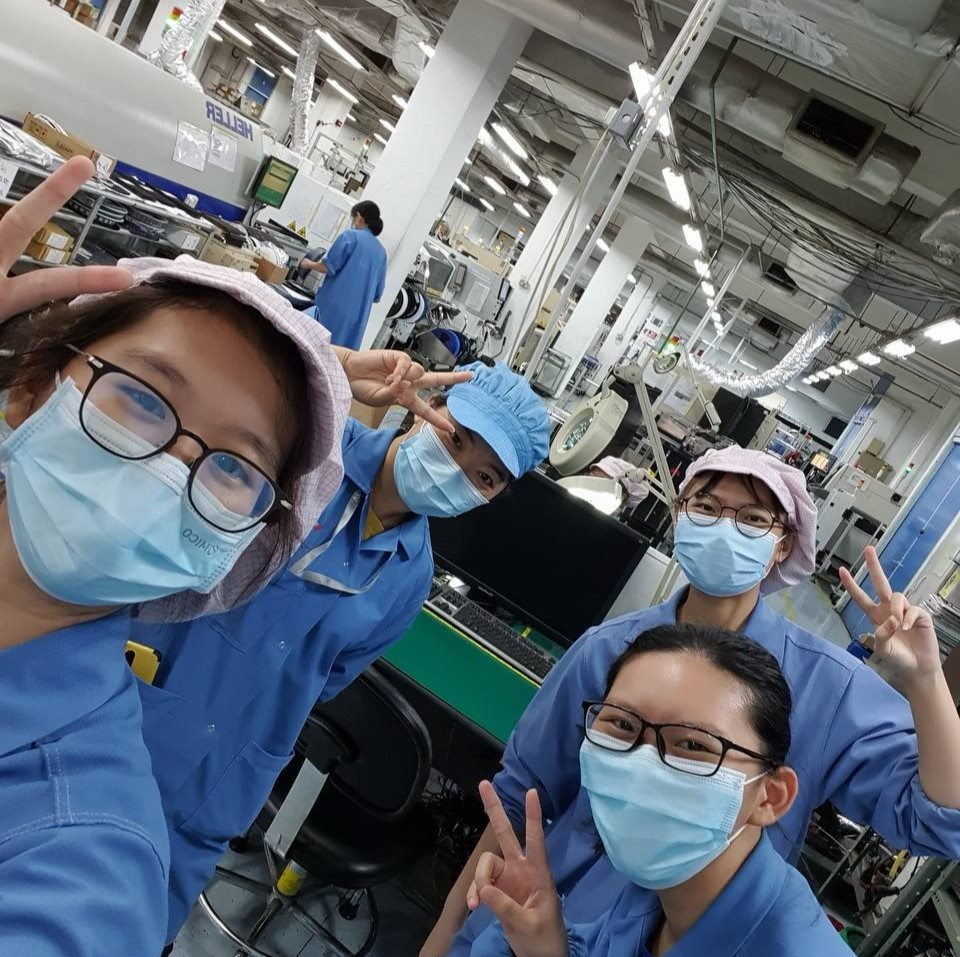
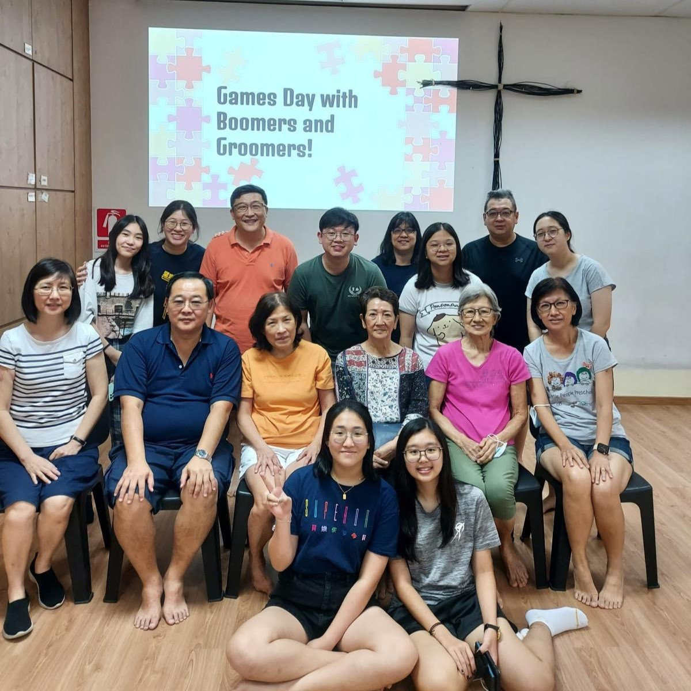
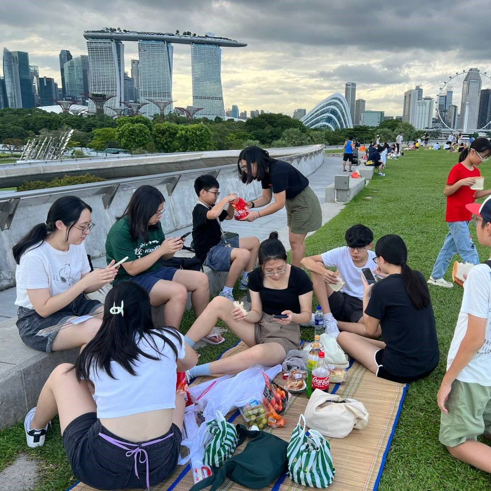

Through a range of projects and roles in internships, volunteer work, and personal endeavors, I've gained valuable hands-on experience that has shaped my professional development. These opportunities have allowed me to apply my skills in impactful ways and collaborate within dynamic environments. Below are highlights of my roles and contributions across various projects.
As part of the team developing a simulator for the Singapore Airshow 2020, I applied my Aerospace Electronics background...
ST Electronics
As part of the team developing a simulator for the Singapore Airshow 2020, our goal was to showcase ST Electronics' potential to create advanced aircraft simulation technologies, with a focus on providing high-quality training tools. The simulator was designed to cater to a diverse range of attendees, from aviation professionals and enthusiasts to the general public, offering an engaging experience for all. It successfully replicates aircraft movements, flight dynamics, and airshow performance, providing users with a realistic and immersive experience. One of the standout features of the simulator is its use of MAK, a specialized program developed by ST Electronics, which simulates a variety of weather conditions and real-time flight behaviors. In addition, the layout and visual design of the instrument panel were created with attention to detail to enhance realism and user interaction. For the development process, we used C# as the primary programming language, along with MAK's capabilities to ensure the simulation could accurately reflect flight dynamics. One of the major challenges in developing the simulator was striking the right balance between realism and cost-effectiveness. While the simulator is a prototype, we aimed to deliver an experience that closely mirrors real-world flight conditions. This simulator not only serves as an innovative tool for improving safety and flight training but also contributes to fostering international collaboration and advancing the future of aviation simulation.



AJA Enterprises
As an Administrative Intern at AJA...
AJA Enterprises
As an Administrative Intern at AJA Enterprises Pte Ltd, I took on a wide range of responsibilities that allowed me to gain hands-on experience in office management and operations. Working in a small company, I was involved in tasks such as data entry, scheduling, and assisting with project management. I also liaised with partnering companies, maintained office laptops, addressed IT issues, handled claims, and posted internship opportunities while scheduling interviews for future interns. One of the key skills I developed during this internship was a strong proficiency in Excel, which helped me organize and analyze data more efficiently. Additionally, I gained valuable experience in writing professional emails and documents, as well as creating templates for forms to streamline future processes. A key learning takeaway from this role was the importance of timely communication; I learned to reply to emails within 24 hours to ensure smooth workflow and avoid leaving colleagues or clients hanging.
This role not only honed my organizational and communication skills but also exposed me to the realities of the corporate world, where I had to manage multiple tasks and interact with a variety of people. I learned to build patience, work with diverse personalities, and handle unreasonable demands professionally. One of the biggest challenges I faced was balancing numerous responsibilities while reporting to different team members, each with their own set of expectations. I quickly adapted to these demands by prioritizing tasks and staying organized, which ultimately lightened the load for my colleagues. My internship experience also provided insight into how administrative support contributes to the overall efficiency of a company, as my work helped improve processes and free up time for other team members to focus on core business activities. What I enjoyed most about my time at AJA was the supportive work environment and the opportunity to collaborate closely with colleagues. I particularly appreciated company lunches, which provided a chance to connect with the team in a more informal setting. Overall, this internship was an invaluable learning experience that not only broadened my understanding of business operations but also allowed me to grow personally and professionally.
Work
Venture
As part of the production line at Venture Corporation, I ensured accurate placement of components on motherboards and learned to interpret complex motherboard diagrams...


Venture
As part of the assembly line at Venture Corporation, I was responsible for placing components into the machine, which then automatically placed them onto the motherboards. My main responsibility was to ensure the correct placement of each component by cross-checking the layout of each board with the provided diagram. This careful inspection helped ensure that all components were positioned in their correct slots. If any components were misplaced during the automated process, I used specialized tools like tweezers to carefully reposition them. If the issue occurred repeatedly across multiple boards, I would alert the technician to resolve the problem. Working closely with a team of three people, we focused on maintaining a high level of accuracy and efficiency. While I wasn't deeply involved in reading complex technical diagrams or understanding electronic components, my role required quick scanning and high concentration during office hours to prevent errors. I learned to work efficiently without compromising accuracy, which helped meet production deadlines and maintain quality standards. I also faced challenges like occasional misplacement of components, but thanks to a skilled technician and the team's support, mistakes were quickly corrected, minimizing any disruption to the production line. The work environment emphasized teamwork, precision, and meeting performance targets, which reinforced my ability to stay focused and contribute to the success of the production process. Although the job was physically demanding—leading to some backaches from prolonged periods of standing and poor posture—it was rewarding to see the final product come together. One of the key takeaways from this experience was the importance of balancing speed with accuracy in a high-pressure production environment, and I particularly appreciated the sense of teamwork that allowed us to overcome challenges efficiently.
Other Experience


AGPC
As a youth committee member, I assist in after-school care and help plan events like the Mid-Autumn Festival and Christmas celebrations. This role has strengthened my teamwork and organizational skills while allowing me to positively impact our community.....
AGPC
As a youth committee member, I played an active role in planning programs and activities for the after-school care program, ensuring that the children received both academic and emotional support. My responsibilities included helping the children with their studies and overseeing their participation in church programs. Additionally, I took on leadership roles in organizing events such as the Mid-Autumn Festival and Christmas celebrations. I was responsible for coordinating logistics, managing event activities, and ensuring everything ran smoothly. This role allowed me to strengthen my teamwork, leadership, time management, and problem-solving skills. I frequently communicated with other committee members and external vendors to ensure progress and resolve any issues that arose. For example, when dealing with unexpected changes, I remained flexible and adapted the plans accordingly, which proved especially useful during events when we had to predict and manage large crowds. One challenge I faced was managing crowd control, but by opening additional stations and distributing the crowd, we were able to mitigate the situation effectively.
Through my involvement, I contributed to creating a positive and enjoyable experience for the community, helping to lighten the load for senior members of the committee. Seeing the children recognize me outside of the program and call me “Teacher Janelle” was one of the most rewarding aspects of this role. It showed me that I had made a lasting impact on them, creating a safe and enjoyable environment for children, especially those from broken families. I also learned valuable lessons in compassion and patience, growing in character as I collaborated with others and learned how to organize successful community events. Ultimately, being part of the youth committee allowed me to develop not only organizational and leadership skills but also a deeper understanding of the importance of community and service. The most fulfilling aspect of the role was working closely with the children, creating an environment where they felt supported and happy.